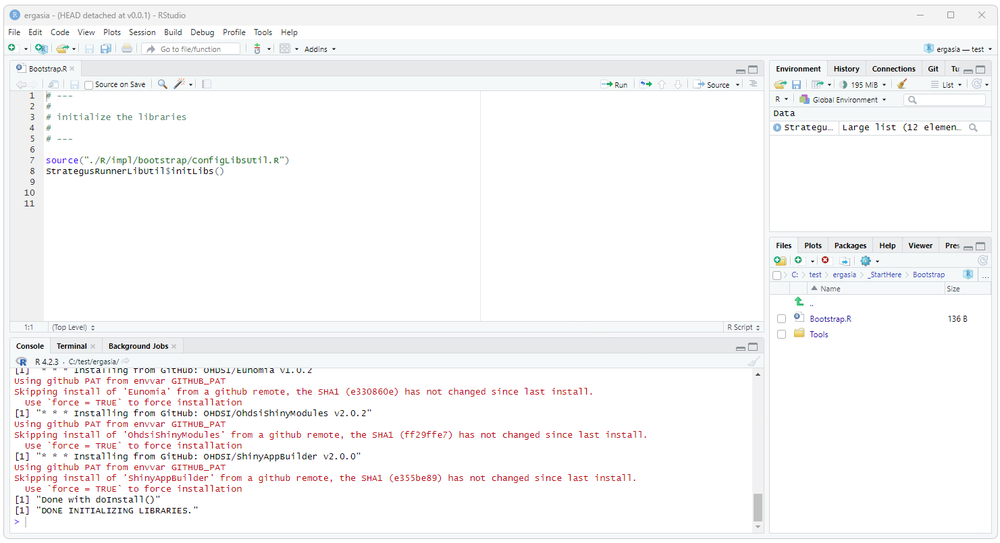
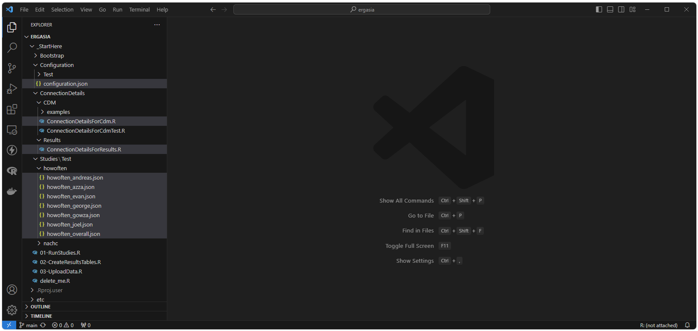
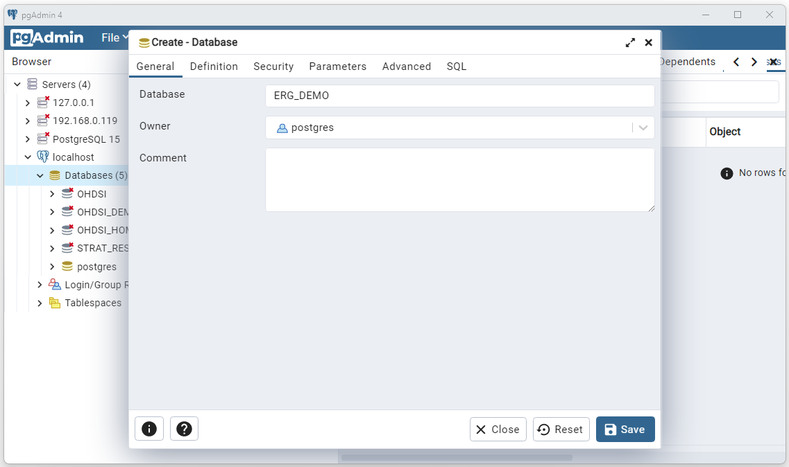
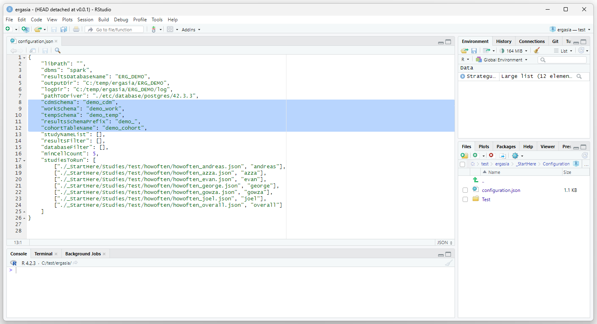
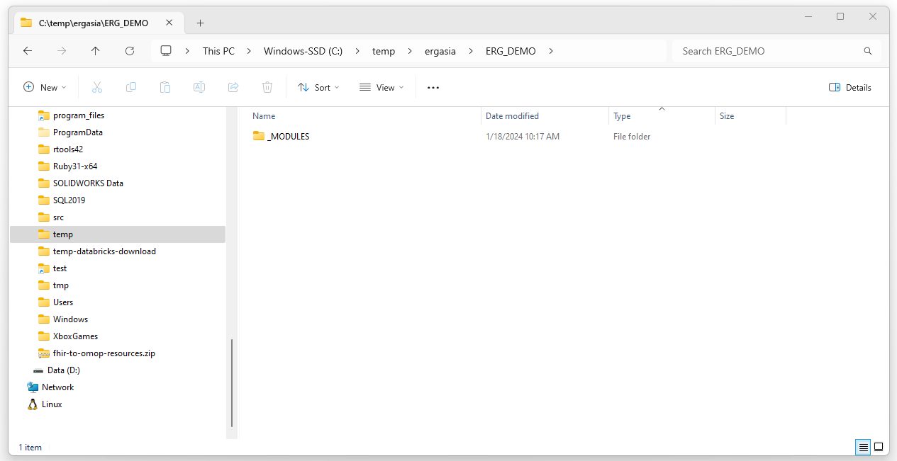
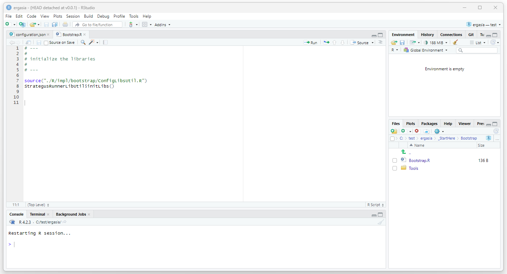
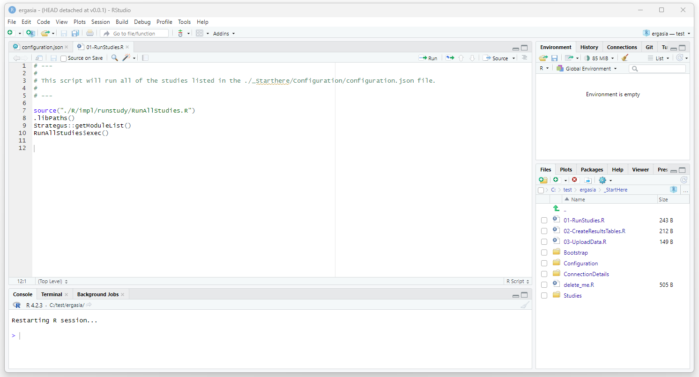

OHDSI Databricks User Group
OHDSI Databricks User Group How to Run a Strategus study using Ergasia
Introduction
This document provides a complete example of how to run a Strategus
study using the Strategus client Ergasia
Identify or create CDM
Before starting, identify the datasource to be used as the CDM. If you do not have a data source, you can create an instance of the Eunomia CDM by following the instructions in the OHDSI on databricks guide in the “Create a test instance of the CDM in Databricks” section.
Installation of R and RTools
R 4.2.3 and RTools 4.2 are used here. These are the versions that were used for testing and validation.
R 4.2.3 can be downloaded from
https://cran.r-project.org/bin/windows/base/.
RTools 4.2 can be downloaded from
Or the windows installer for each can be directly downloaded here:
After downloading the installers perform these steps in order:- Run the R installer executable.
- Set the LibPath as described below.
- Then run the RTools installer.
Set LibPaths
Strategus uses the .libPaths() setting shown below. In order for libriaries to all be placed in the correct place, the default for .libPaths() needs to be set. Edit the .Renviron file by running the following.
install.packages("usethis")
library(usethis)
edit_r_environ()
Add the following line to your .Renviron file.R_LIBS_USER="C:/Program Files/R/R-4.2.3/library"
Download Client
To run our Strategus study we will be using a Strategus client called Ergasia (named after the Greek god of light work… or so I’ve been told by ChatGPT). Clone the project and check out the desired version as shown below (this documentation was created for the v0.0.1 version).
git clone https://github.com/NACHC-CAD/ergasia cd ergasia git checkout v0.0.1
Note that the Ergasia project is somewhat object oriented. Files are best browsed in a tool that supports file browsing a little bit better than RStudio. Here, we will be using Visual Studio Code (VSC) to browse files and RStudio to execute code.
Bootstrap
Note for Windows users:
Currently Strategus uses C:/Program
Files/R/R-4.2.3/library as the location for R library files. This
directory is often restricted to the admin user for write access. To
ensure everything runs smoothly, it is recommended that you Start
RStudio as admin user for all Strategus work.
Strategus (and R in general) has requirements for version configuration.
Before we can run our study, we need to make sure we have the correct
libraries and the correct versions of these libraries installed. This
can be done by simply running the Bootstrap.R script found in
./_StartHere/Bootstrap. Open this script in RStudio and execute the
entire script (e.g.

Testing Resources
The Ergasia project includes everything required to run included test
studies… except for the connection details for the CDM database
connection. Future releases will include connection details to a default
install of Braodsea. To run a test study, simply create your CDM
connection details (as described below),
edit the ./_StartHere/Configuration/configuration.json file (as
described below), and then run ./_StartHere/01-RunStudies.R script.
Resources and Configuration
All of the resources you will normally need to run a study are in the _StartHere folder including all of the configurations you will need to edit or otherwise define.
To run a study, we will need the following:
- Connection Details for the reporting database (postgres)
- Connection Details for the CDM
- The Strategus study definitions for the studies you are going to run
- A configuration file that pulls everything together

Connection Details: Reporting
Connection details for your reporting (postgres) instance can be
configured by editing:
./_StartHere/ConnectionDetails/Results/ConnectionDetailsForResults.R
The contents of the existing ConnectionDetailsForCdm.R file are
shown below.
# ---
#
# ConnectionDetailsFactoryForResults.R
# This script creates the DatabaseConnector connectionDetails objects used for reporting results.
# Use this code as is or substitute with your own.
#
# ---
ConnectionDetailsForResults <- {}
ConnectionDetailsForResults$createConnectionDetails <- function() {
resultsDatabaseConnectionDetails <- DatabaseConnector::createConnectionDetails(
dbms = "postgresql",
connectionString = "jdbc:postgresql://localhost:5432/STRAT_RESULTS?user=postgres&password=ohdsi¤tSchema=STRAT_RESULTS",
pathToDriver = "D:/_YES/databases/postgres/drivers/42.3.3"
)
return(resultsDatabaseConnectionDetails)
}
Connection Details: CDM
Connection details for your CDM instance can be configured by editing:
./_StartHere/ConnectionDetails/CDM/ConnectionDetailsForCdm.R
Instructions for setting up the keychain used here can be found in the
key ring example.
The contents of the existing ConnectionDetailsForCdm.R file are shown
below.
# ---
#
# Implementation of ConnectionDetailsForCdm that returns a Databricks connection
# and uses a keyring to store secret information.
#
# ---
ConnectionDetailsForCdm <- {}
ConnectionDetailsForCdm$get <- function() {
#
# functions to get databricks token (user will be prompted for keyring password)
#
getToken <- function () {
return (
keyring::backend_file$new()$get(
service = "production",
user = "token",
keyring = "databricks_keyring"
)
)
}
#
# functions to get url with the token included
#
getUrl <- function () {
url <- "jdbc:databricks://nachc-databricks.cloud.databricks.com:443/default;transportMode=http;ssl=1;httpPath=sql/protocolv1/o/3956472157536757/0123-223459-leafy532;AuthMech=3;UseNativeQuery=1;UID=token;PWD="
return (
paste(url, getToken(), sep = "")
)
}
connectionDetails <- DatabaseConnector::createConnectionDetails (
dbms = "spark",
connectionString = getUrl(),
pathToDriver="D:\\_YES_2023-05-28\\workspace\\SosExamples\\_COVID\\02-data-diagnostics\\drivers\\databricks\\"
)
return(connectionDetails)
}
Strategus Study Definition
The Ergasia project assumes you have created your Strategus study definition. Study definitions that can be used for testing and validation can be found in the ./_StartHere/Studies folder. The process for creating a Strategus study is currently documented at https://ohdsi.github.io/Strategus/articles/CreatingAnalysisSpecification.html
Configuration File
A sample configuration file that can be used for testing can be found at ./_StartHere/Configuration/configuration.json. The contents of this file are shown below.
{
"libPath": "",
"dbms": "spark",
"resultsDatabaseName": "EUNOMIA_RESULTS",
"outputDir": "C:/temp/ergasia/EUNOMIA",
"logDir": "C:/temp/ergasia/log",
"pathToDriver": "./etc/database/postgres/42.3.3",
"cdmSchema": "demo_cdm",
"workSchema": "demo_work",
"tempSchema": "demo_temp",
"resultsSchemaPrefix": "demo_",
"cohortTableName": "demo_cohort",
"studyNameList": [],
"resultsFilter": [],
"databaseFilter": [],
"minCellCount": 5,
"studiesToRun": [
["./_StartHere/Studies/Test/howoften/howoften_andreas.json", "andreas"],
["./_StartHere/Studies/Test/howoften/howoften_azza.json", "azza"],
["./_StartHere/Studies/Test/howoften/howoften_evan.json", "evan"],
["./_StartHere/Studies/Test/howoften/howoften_george.json", "george"],
["./_StartHere/Studies/Test/howoften/howoften_gowza.json", "gowza"],
["./_StartHere/Studies/Test/howoften/howoften_joel.json", "joel"],
["./_StartHere/Studies/Test/howoften/howoften_overall.json", "overall"]
]
}
Each of these parameters are described below.
Parameter Details
This section describes the parameters defined in the ./_StartHere/Configuration/configuration.json file. The next section (“Run Studies”) will describe the end to end process to run a study.
libPath
This parameter is no longer used and is in the process of being refactored out.
dbms
The dmbs of your CDM (e.g. “spark”, “postgres”, etc.
resultsDatabaseName
This is the name of the Postgres Database where the results will be stored. This database needs to be created before running a study.
outputDir
The root directory where the study results will be written.
logDir
The directory where logging output will be directed.
pathToDriver
The path to where the jdbc driver for your Postgres database can be found. This diretory should only contain the driver and no other files.
cdmSchema
The name of the schema that contains the CDM to be used for the study.
workSchema
This is a schema in the same dbms system that will be used as a workspace by Strategus. This schema needs to be created before running a study.
tempSchema
This is a schema in the same dbms system that will be used as a workspace by Strategus. This schema needs to be created before running a study.
resultsSchemaPrefix
This is used to name the schema where the results of a study will be store. For example, if we run the study called “andreas” (described below), the results of the run will be written to a schema called “demo_andreas”.
cohortTableName
Strategus needs this. Pick a name that make sense to you. I have not yet needed to access this table (i.e. it seems to be used primarily internally).
lists
studyNameList, resultsFilter, and databseFilter are currently not used.
minCellCount
This is a value used to supress the creation of small sets of patients to protect privacy.
studiesToRun
This is a list of the studies that will be run. Each item in this list contains the name of the file that contains the Strategus definition for the study and the name to be used for the study.
Run A Study
In this section we will give a detailed description of each of the steps used to run a study. The following steps are described.- Create the Postgres Database to hold the results
- Create the work/temp/cohort schemas in the same dbms as your CDM that will be used by Strategus
- Delete the remains of any previous run
- Edit .Renviron
- Initialize the R libraries (Bootstrap)
- Run the study
- Create the tables where the results will be stored
- Upload the results
- View the results
Note for Windows users:
Currently Strategus uses
C:/Program Files/R/R-4.2.3/library as the location for R library files.
This directory is often restricted to the admin user for write access.
To ensure everything runs smoothly, it is recommended that you Start
RStudio as admin user for all Strategus work.
Run a Study Details
In this section end-to-end detailed instructions to run a study are given.
Create the Results Database
Results for a study are stored in a PostgreSql database. The empty shell of the database needs to be created. The tables will be created after the study is run using the ./_StartHere/02-CreateResultsTables.R script.
To create the PostgreSql database, open PgAdmin, select your host,
right click on Databases, and select Create > Database…

Enter a name for your database (ERG_DEMO will be used
here) and select Save.

Open the
./_StartHere/Configuration/configuration.json file and edit the
“resultsDatabaseName” parameter to point to the new database (in this
case ERG_DEMO). 
Create Working Databases
Strategus uses three databases to run a study: a working schema, a temp schema, and a cohort schema. These databases will be in the same RDMS as your CDM (in this case, Databricks). The empty shells of these databases need to be created before running a study. An example script that will create the instances of these schemas used by this example is given below.
-- the work schema drop database if exists demo_work cascade; create database demo_work; -- the temp schema drop database if exists demo_temp cascade; create database demo_temp; -- the cohort schema drop database if exists demo_cohort cascade; create database demo_cohort;
Update the ./_StartHere/Configuration/configuration.json file to reflect the names of the databases we just created as shown below. Also, set the “resultsSchemaPrefix”, this parameter is used to name the results of each indidual study. Also, set the “cohortTableName”, in this case we are going with “demo_cohort”. I haven’t yet had the need to find this table (this parameters seems to be an internal configuration). You probably don’t need to worry too much about this parameter unless you are in an environment with multiple teams and users. 
Delete Previous Run
Navigate to the folder defined in connfiguration.json as the
“outputDir” (in this case C:_DEMO). Delete all but the _MODULES dir (the
_MODULES dir is where the Strategus libries will be places, this is
defined in the .Renviron file as described below). You can also delete
the _MODULES directory if you are getting errors and think that the
Strategus build/environment is not clean. This will cause the Strategus
dependencies to be downloaded again the next time Strategus is run.

Edit .Renviron
Edit your .Renviron file by executing the following:
install.packages("usethis")
library(usethis)
usethis::edit_r_environ()
Add the following to the .Renviron file:
-
INSTANTIATED_MODULES_FOLDER
This is the folder where Strategus will put its dependencies (the _MODULES folder mentioned above). -
GITHUB_PAT
This is your github token. For more information on this including how to generate a token go to https://ohdsi.github.io/DatabaseOnSpark/developer-how-tos_git-create-token.html
STRATEGUS_KEYRING_PASSWORD -
R_LIBS_USER
This is where the R libraries will be placed. Set this to C:/Program Files/R/R-4.2.3/library for windows.
This can be hard coded to ‘sos’
INSTANTIATED_MODULES_FOLDER='C:/_YES/_STRATEGUS/_MODULES' GITHUB_PAT='<YOUR_GITHUB_TOKEN>' STRATEGUS_KEYRING_PASSWORD='sos' R_LIBS_USER="C:/Program Files/R/R-4.2.3/library"
 Save and close the .Renviron file.
Save and close the .Renviron file.
Initialize R Libraries
Open RStudio (using run as admin user). Open the ergasia.Rproj. Open
./_StartHere/Bootstrap/Bootstrap.R. Execute this script.

Run the Study
Open ./_StartHere/01-RunStudies.R and execute this script.

Create Results Tables
Comming soon…
Upload Results
Comming soon…
View Results
Comming soon…